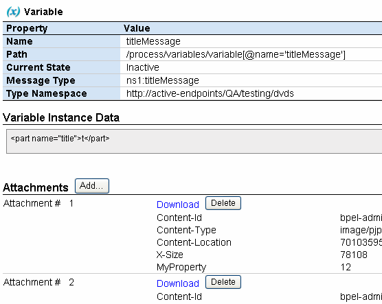
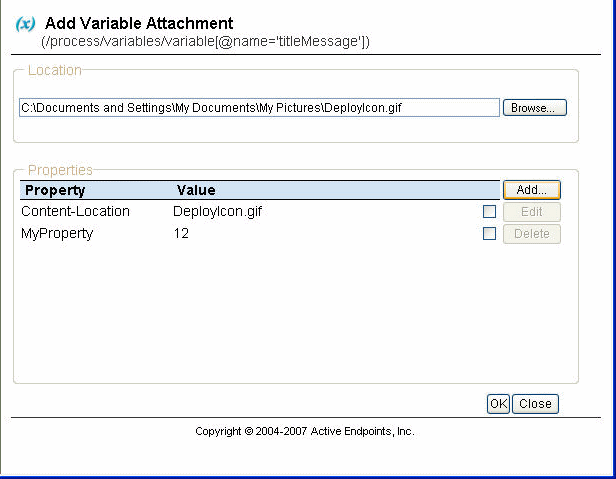

Working with Variable Attachments
You can view and download attachments for a variable, whether a process is running, faulted, or completed.
If a process is running, you can also add and remove variable attachments.
You can do the following to view, download, add, and remove process variable attachments:
- Select a process from the Active Processes list.
- In the Active Process Detail window’s Outline View, expand the list of variables.
- Select a variable from the list to view the variable instance data and attachments, as shown in the following illustration for a running process.

Adding an Attachment
While a process is running, you can add one or more attachments to a variable. In the Active Process Detail page, expand a variable to display the Attachments header. Select Add to open the Add Variable Attachment window, as shown in the example.

You can browse to locate a file to attach. You can also add or edit attachment properties and values.
Deleting an Attachment
To delete an attachment for a running process, select Delete, next to the Download link.
Viewing or Downloading an Attachment
For a running, faulted, or completed process, select the Download link to open a dialog that asks where to open or save the file.
Back to ActiveBPEL® Engine Administration Console Help
Copyright (c) 2004-2008 Active Endpoints, Inc.